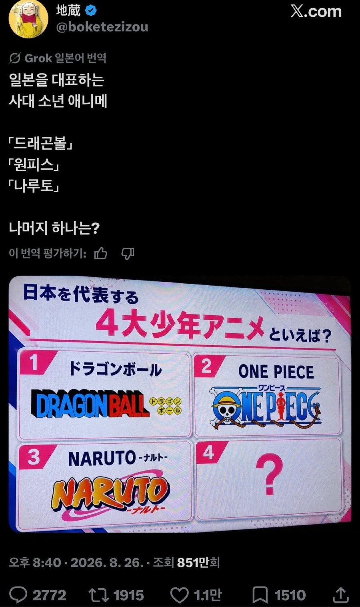
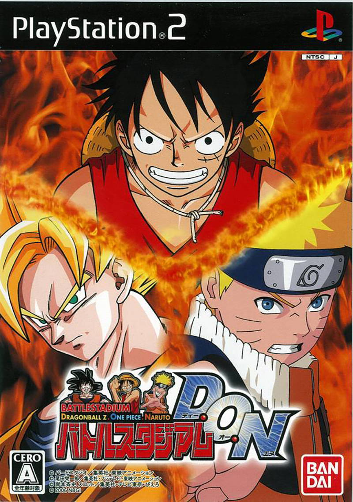
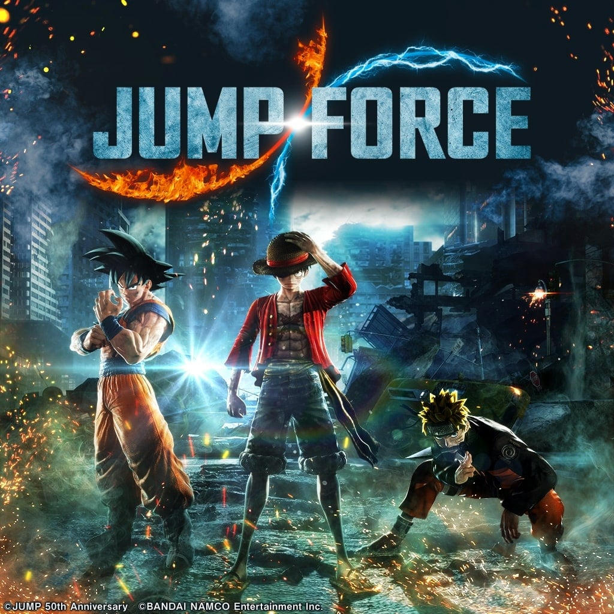
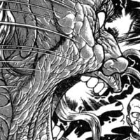

일본에서는 드래곤볼, 원피스, 나루토 이 세개 체급이 커서
묶어서 생각한다고



일본에서는 드래곤볼, 원피스, 나루토 이 세개 체급이 커서
묶어서 생각한다고
일단 장르도 스포츠물이라 같이 묶기 뭐하고 본문에는 4대 소년애니메하면 슬덩이 티비 애니는 완결도 못 나왔으니
완결 좆박은건 난 진짜 정이 안 가더라
동시대 점프연재 소년물이라
그치 이게 맞지
드래곤볼 어느순간보니 마인부우가 시장에서 푸딩쳐먹고있더라 뭔 고양이가 커피쳐마시고있고
드볼은 원탑 아님?
그리고 원나블은 세대가 다르지 않나
일본 애들이 느끼기엔 블리치 전성기 말곤 그정도로 묶일급 아니었나 보지 뭐
ㅇㅇ 뭐 저기서 얘기하는건 급이 안맞다는 얘기긴 하지
우리는 원판에서 끝났지만, 쟤네는 GT같은거까지 계속 가서 그런거 같기도 하고
원나블이 그 시대 원나블 말하는거 아니였나 드래곤볼은 시대가 다르니 안 붙인거고
원나블 유래가 그냥 원피스에 삼대장 나오니까 그거 따라서 대충 그때 잘나가는 만화 3개 묶어서 삼대장으로 부르기 시작한거임 ㅋㅋ
드래곤볼 = 고대의 무언가
원나블 = 현세대 탑3 이런 느낌이었는데 일본은 좀 다르구나
드래곤볼 = 고대 신화
원나블 = 영웅급
사실 체급으로 따지면 드볼이 맞지만 원나블은 동시대라서 묶는거니까
드래곤볼은 체급보단 너무 올드해서 ㅋㅋㅋ
드래곤볼은 유유백서, 슬램덩크 즈음의 소년점프 전성기 라인이고 그 후계 삼대장이 누구냐 하는건데 나도 원나헌이라고 보는게 헌터랑 원피스랑 연재 시작 시기가 비슷함
헌터는 일단 완결부터 해야지 어디 휴재만 때리는 작품이 블리치랑 비교함??
헌헌은 사실상 유기나 마찮가지니 토가시는 양가놈이랑 비교하는게 맞다
저희 헌헌 아직 정상영업 합니다!
물론 2주전에 다시 휴업했습니다...
원래 사천왕이니 삼대장이니 있으면 최약체 하나 껴있는게 맞아
근데 사실 나루토도 단행본, 굿즈 등 IP 수익 따졌을때 원피스에 못비빔
드볼은 앞세대라 묶기 애매하고
헌헌은 원나블로 묶을당시에 제대로 연재 안됐고..
우리나라에서의 인기를 가지고 만든거니 일본 기준 알빠노고
만화뿐만 아니라 애니도 같이 전성기를 맞이하면서 우리나라에서 계속 묶여있었으니까 원나블된거지 원나헌이나 다른게 될순 없음
그치 저게 정배이긴함. 우리는 드래곤볼은 레거시로 보고 원나블 이렇게 묶어서 그런 듯
블리치가 같이 연재해서 그런거지 힙스터픽이엿구나
일본은 원나>>>블 이었나봄

")
나는 왜 한국인인데 저 다섯 중에 블리치만 유일하게 안 봄ㅋㅋㅋ
그치만 원나 합쳐도 블리치 중2병을 못이기거든
반대로 쟤네는 왜 블리치가 인기가 없는거야?
블리치가 인기없는게 아니라, 원 나 가 워낙 인기가 많아서
아니 3개중에서 블리치가 젤 떨어지는것도 인정하고 세개를 묶어 부르는건 그냥 그 세개가 우리는 거의 동시대에 애니로도 나오고 연재되고있었고 드래곤볼은 그때에도 이미 고전명작이였다고
자기 능력 설명하면서 싸우는건 진짜 이해 안감
저거 묶냐 안묶냐 논란이 별 의미 없는게
드래곤볼 엮는다 치면 원피스랑만 묶여야함
블리치 그정도 아니다식으로 이짤 올라오는거 같은데 같은 논리로 나루토도 원피스에 못비벼
나루토가 원피스에 못비비는건 에바지
못 비빔
원작 만화 판매부수만으로 1원피스=2나루토=4블리치임
애니, 극장판 등 IP 산업으로 가면 차이는 훨씬 심해짐
어떻게 보면 일본에선 원피스랑 나루토가 드래곤볼이랑 겸상 할 정도로 체급이 크다는거 아니야? 그런 체급 큰 애들이 한국에선 블리치랑 엮이니 블리치는 뭔데 저사이에 끼냐? 이런거 같고 인식만 보면 이런거같은데
그거 맞음. 원피스 나루토는 블리치보단 드래곤볼에 더 가까운 체급이란거지
나는 데스노트
일단 나루토가 결말이 좋았어.. 좆같은 보루토 없다치면ㅋㅋ
한국은 드래곤볼 원탑에
원나블 묶는느낌이지
그 당시에 케이블만화채널에서
방영해준 영향도 있는거 같음
투니버스에서 원나블은 주기적으로
틀어줬는데 헌터헌터는 못본거같음
오히려 배틀짱이나 레이브? 이런 애니
많이 해줬던거같은데
그시대 실시간으로 나오는 만화였어서 그렇지 ㅋㅋㅋ 당연히 드래곤볼을 어디다 가져다대겠냐
쟤네는 애니가 아니라 만화잡지 기준이잖아
우리는 투니버스에서 틀어주는거 기준이고
드래곤볼이랑 슬램덩크는 시대가 달라서 끼는 의미도 없고
헌터x헌터는 연재나 하라그래라
예전 그랑죠 같은거 아닌가?
우리나라에선 그랑죠가 유명했을때
무슨 마루? 로봇물 만화가 일본에서는 유명해서
그것도 의아해한다고 했던거 같은데
슬램덩크 아님?